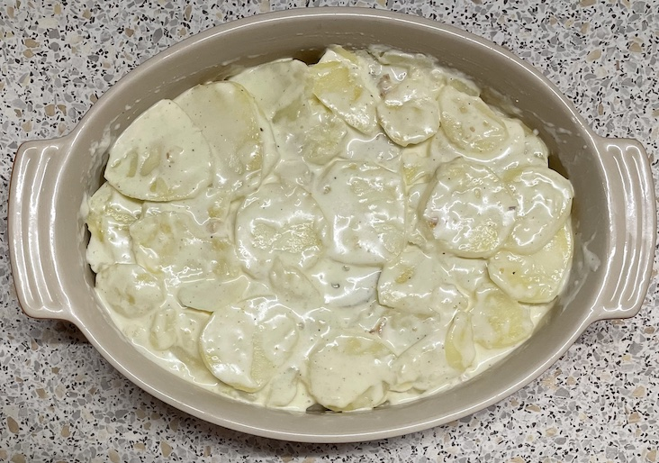
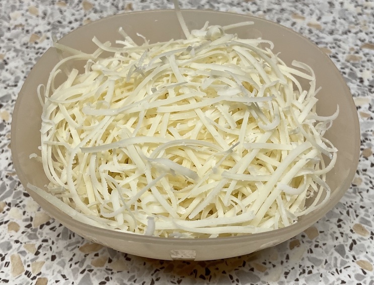
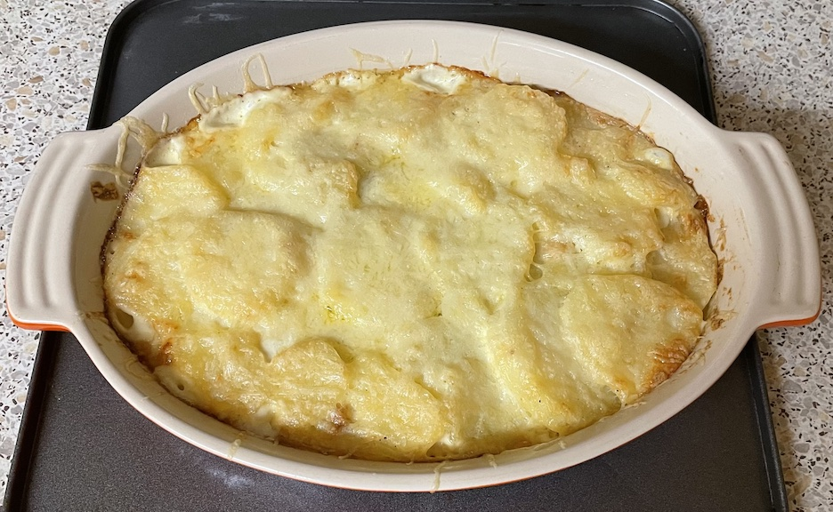

Gratin dauphinoise
Leeks (optional)
- Cook gently until soft, do not brown
- olive oil
- 1 leek thinly sliced
- Add and cook for 2 mins
Gratin
- Bring to simmer
- 250ml double cream
- 100ml milk
- pinch nutmeg grated
- seasoning
- Add and simmer for 10 mins until slightly softened
- 750g potatoes peeled and sliced (weight after peeling)
- Transfer into buttered oven dish arranging potatoes in layers (if including leeks then add leek layer
from half way up)
- Cover with foil and bake at 160°C for 30 mins
- Remove foil, scatter cheese then bake for 10-15 mins until browned
- Leave to cool before serving
Serving
- salmon & watercress / peas
Notes


